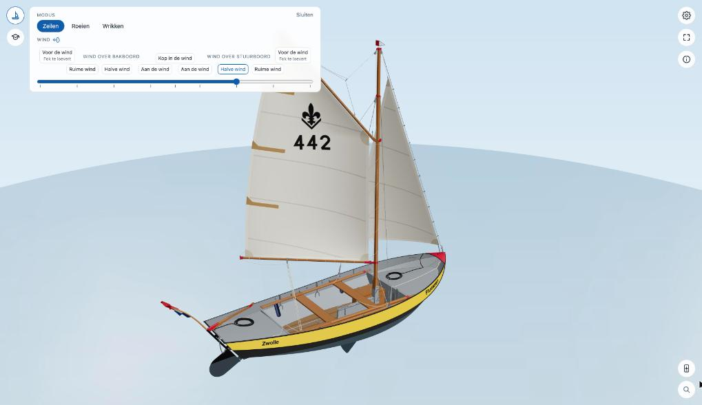
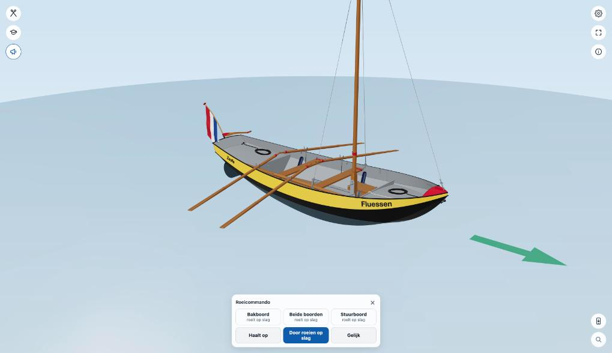

Zeilen en roeien
Met de knop Boot linksboven kies je wat de boot doet.
Modus en wind


Modus: Zeilen, Roeien of Wrikken. Het icoon van de knop laat zien in welke modus je bent.
Wind (alleen bij zeilen): de schuif kiest de koers ten opzichte van de wind. In het midden ligt de boot met de kop in de wind; naar rechts komt de wind over stuurboord, naar links over bakboord. Van het midden naar buiten: aan de wind, halve wind, ruime wind en voor de wind (met de fok te loevert). Giek, fok en de bolling van de zeilen gaan mee met de koers. Door het midden schuiven is overstag gaan. De boot blijft liggen; de windpijl draait om haar heen.
Ligt de boot afgemeerd aan een steiger, dan draai je met dezelfde schuif de wind om haar heen. Of het dan een langswal, hogerwal of lagerwal is, volgt uit de wind.
Roeien


In de modus Roeien kies je in het paneel Boot het aantal riemen: twee naast elkaar, twee kruislings of vier. Onder de studentenmuts komt een knop voor de roeicommando's. Die opent een kaart onderin:
- Beide boorden: Haalt op, Door roeien op slag en Gelijk, voor de hele boot.
- Bakboord en Stuurboord: per boord riemen toe, op riemen, stopt af, strijkt, riemen lopen, riemen op en geroeid.
Het commando staat in een tekstballon bij de roerganger. Een groene pijl op het water laat zien welke kant de boot op gaat.
Wrikken
In de modus Wrikken gaat de wrikriem in het wrikgat. Je kunt ook op de wrikriem klikken.
Sturen en het zwaard
Sleep aan de helmstok om het roer te bewegen. Een klik op de zwaardloper zet het midzwaard een stand verder: neer, half, op.